Guide Navigation
This guide will cover both how to get any ID you want, and how to make an ID good for perfect shinies in Pokemon Colosseum on retail.
Open Pokefinder, click gamecube, and go into the searcher tab. In the "filters" section, fill out any qualifications for a spread that you want to make shiny. In this example, I have set the IVs to all be 31, and the nature to be adamant. There should be at least one spread for you, maybe several.
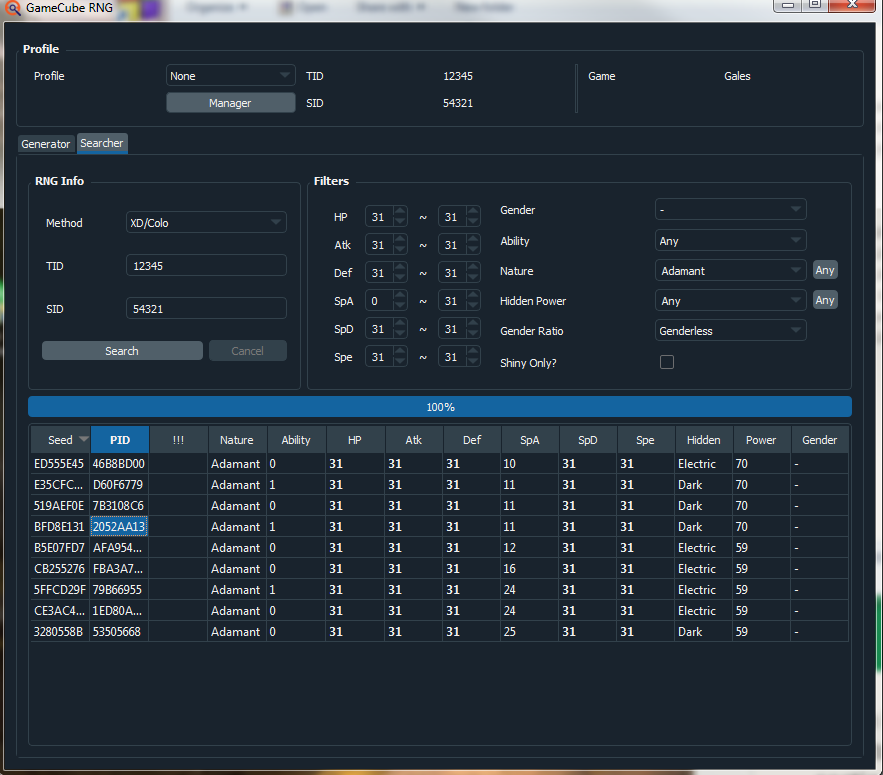First, click the gen 3 tools tab in Pokefinder. Then, click gamecube seed finder. A new window will pop up, and you should click the colo tab. After this, boot Pokemon Colosseum. If you don't have the colo.precalc file, it will link you to a download page for it. All you must do is place the colo.precalc file into the same file as the Pokefinder.exe to get the seed searcher to work. After you do that, restart Pokefinder.
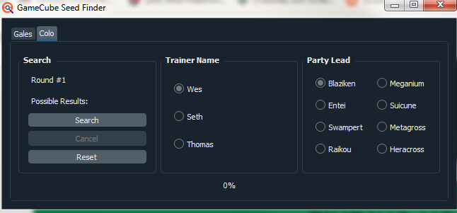In Pokemon Colosseum, head to Battle now on the main menu, then select single battle, then select Ultimate difficulty. Then you'll be at a team preview of a randomly given team.
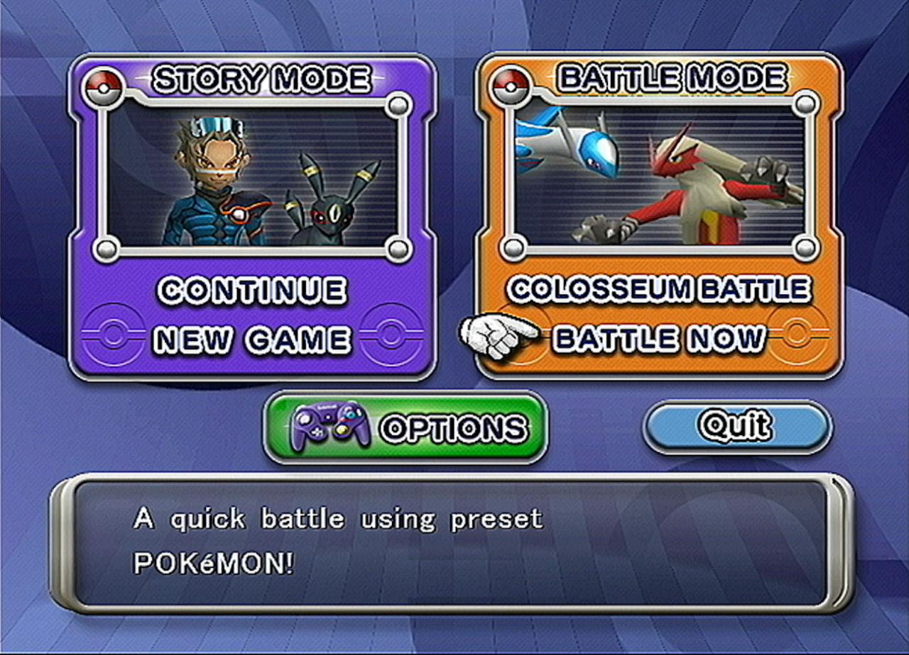 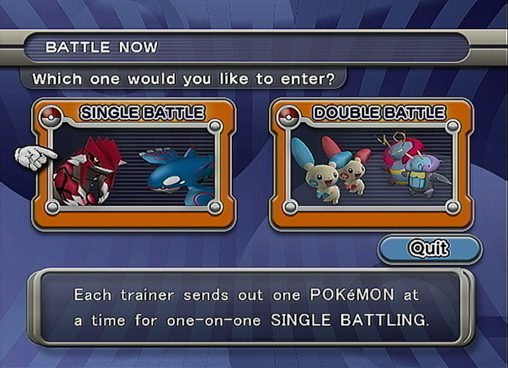 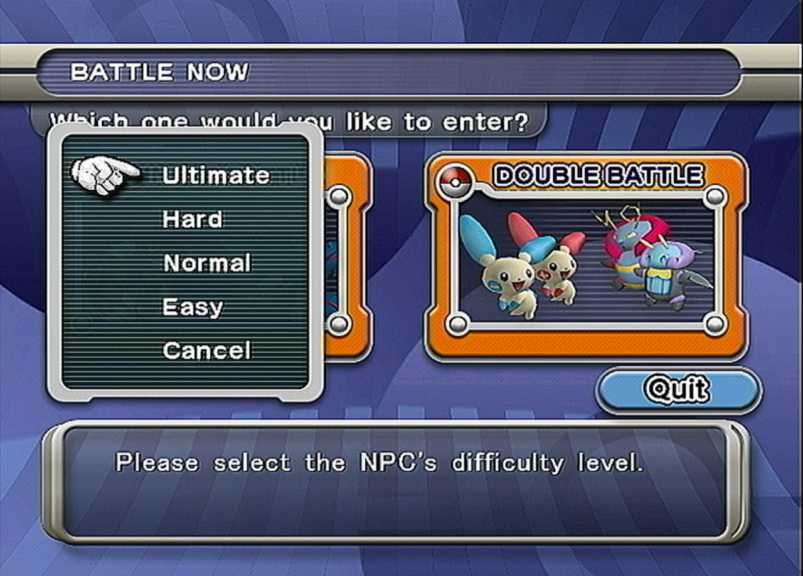 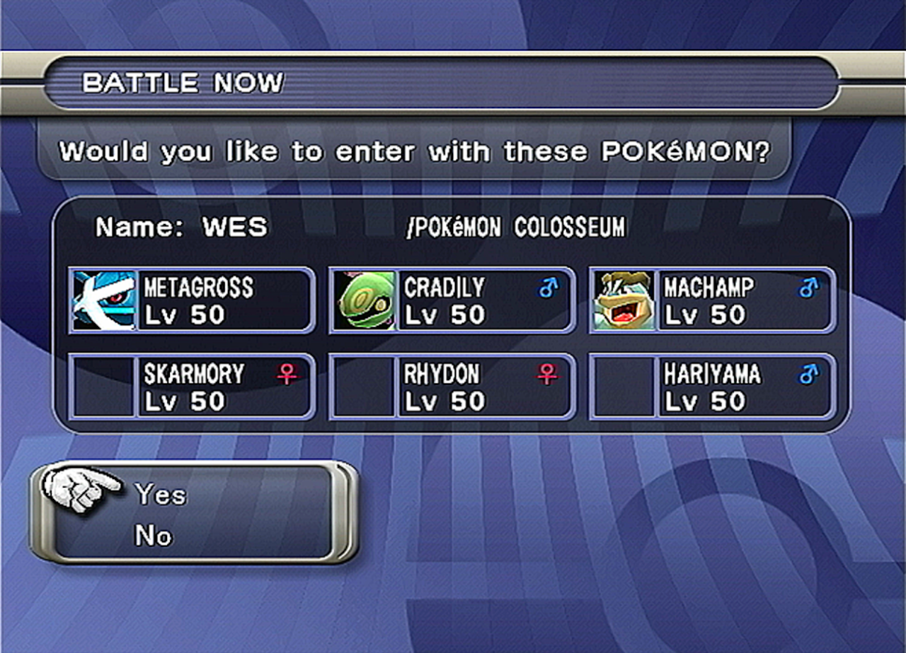Main Menu Singles or Doubles Ultimate Difficulty Team preview
Once at the team preview, take note of the trainer name and lead Pokemon. In this case, it is Wes and Metagross. Click those two options in the seed finder, and hit search. Then, hit B to back out of this menu back to the battle now menu. Go back into ultimate difficult and do the same thing again. Repeat the entire process until a seed is given, and copy said seed to the clipboard. It should take 5-6 attempts to find your seed.
Open CoTool. Click the "ID" tab. In this tab, then check the first box. This is where you will paste your seed. In the two boxes below the first, set the frame range you're willing to wait in EonTimer. I find 10,000 as a maximum to be acceptable, but you can increase it if you'd like. Below that are four checkboxes. Check the first. The three below it are the following: Search for a specific TID, a specific SID, and a specific TID/SID combo to make a PID shiny. In this guide, I will only be using the third box, but you can use all three together if you want. The more specific you get the larger your frame range search should be. I paste the any of the PIDs from the PID Column in Pokefinder into the box I have checked in the picture, with PID D60F6779
Hit the search button to see any results. I tend to look for the lowest frame possible because I am impatient. If there is not one fairly low, I switch PIDs among the filtered spreads until I find one. Once an acceptable frame is found, open EonTimer. Note, the frame is the second column from the left.
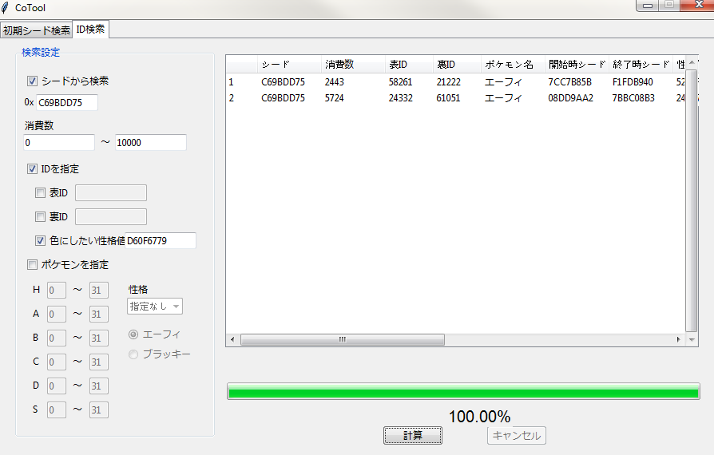While CoTool is in Japanese, I do not believe it needs a translation picture because it is so simple to understand.
In EonTimer, go to the gen 3 tab, and set the mode to standard, lag to zero, and the target frame to the one in CoTool.
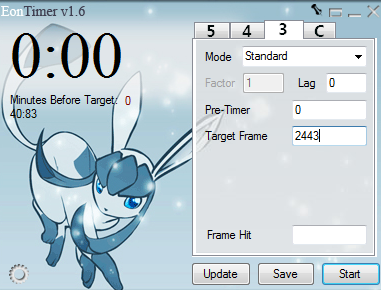Then, start EonTimer at the same time as you press A to start a new game.
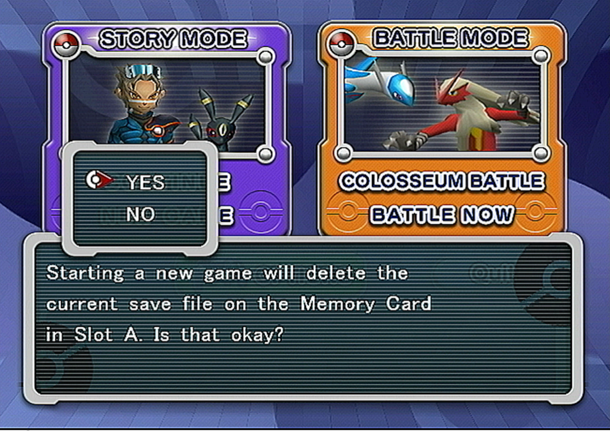Either type your name out or select one of the premade names, and wait at the prompt. Once the timer hits 0, press A to confirm your name
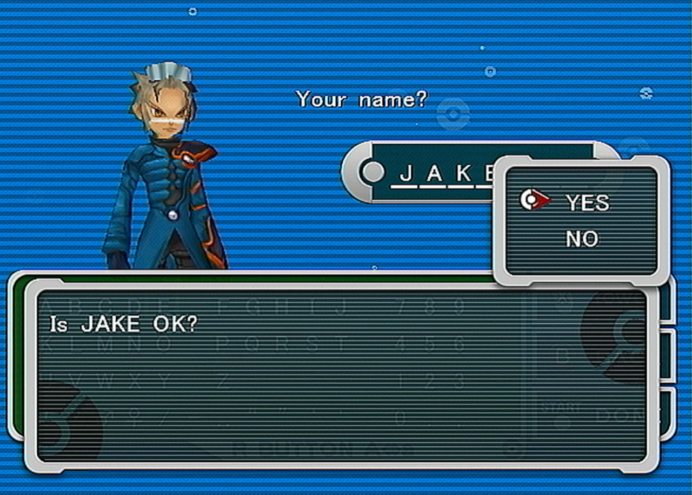After this watch the intro cutscene and wait. If your TID is there, congratulations, you're done!
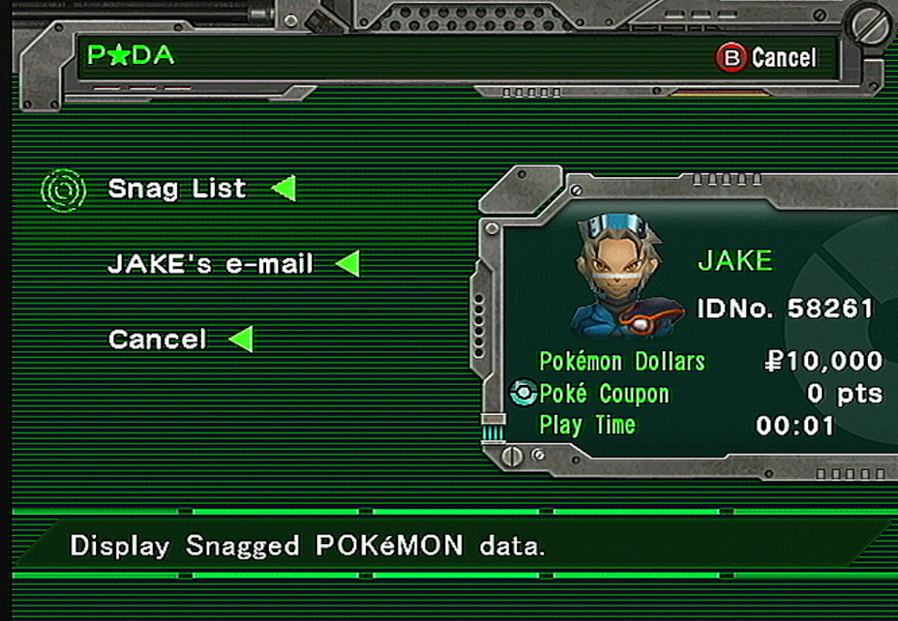If you got the wrong ID, open CoTool and uncheck all boxes under the first ID box. Then, check the second ID box and type the trainer ID you actually hit. We can now see how many frames off we were. Simply find the difference between the frame you aimed for and the frame you hit, and make an adjustment. If you were early, add the difference. If you were late, subtract the difference. Then, we try again from the setup.
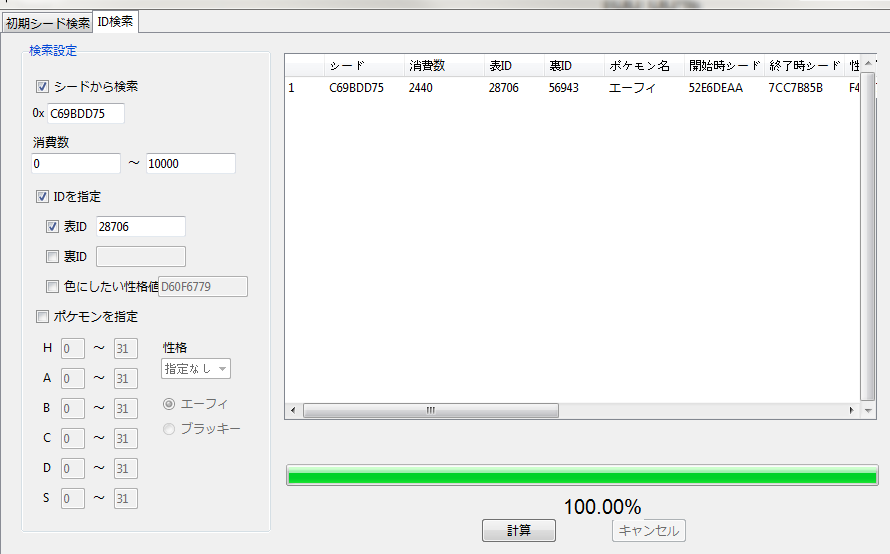Here I show you how to find the ID you potentially hit, as if ID 28706 is the one I hit instead.
While this RNG is fairly consistent, it will take several tries because there is some amount of uncontrollable noise. I also recommend if you are typing your own name instead of picking from a pre-selected name, try and type your name in the same manner every single time.
Also, do not be afraid to aim for very low frames. Frame 450 is around 8 seconds, and it's very reasonable to type a shorter name in that timeframe, or use a pre-selected one.
Thank you for reading, I hope you succeed in getting your custom trainer ID in Pokemon Colosseum. If you have any questions feel free to ask me on Twitter @im_a_blisy or join my discord. https://discord.gg/QchhXQv